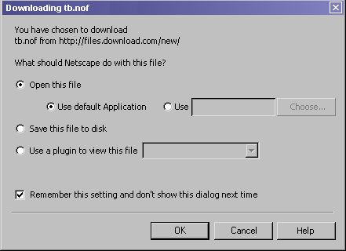
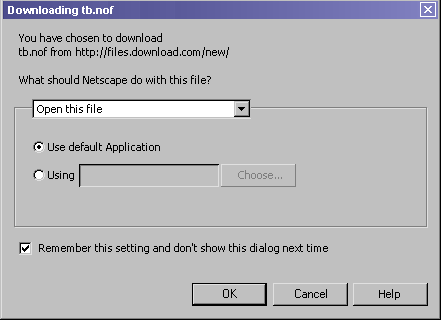
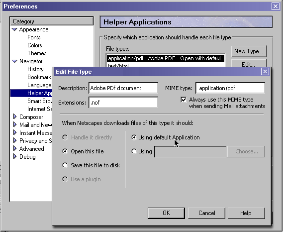

German W. Bauer, Client UE February 16, 2001
Design A:
|
Presenting all choices at once + all choices immediately visible - dialog is a bit overwhelming |
Design B:
|
Selection based dialog using menu list + uncluttered design - other choices may be difficult to discover |
Design C:

|
Selection based dialog using radio buttons + uncluttered design |
Possible assumptions that can be made to simplify choices:
- Saving a file is never remembered
- Never write-modify an OS setting, setting is only used in Navigator
- if this implimented in stages, the dialog could be initially release without
plugin integration
- display the executable name instead of a description, easier to understand
how that relates to choose...

Note:
On MacOS this dialog could be extended to give access to the OS's "File Exchange" control panel which allows users to map downloaded file to Mac files using proper creator type and document type.